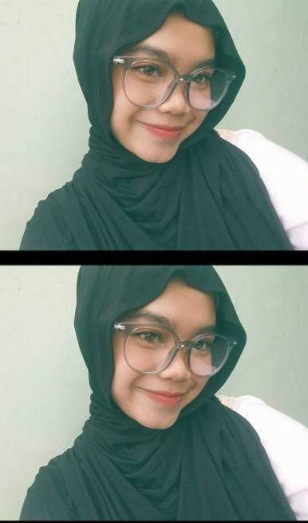

Naura Fauziah
XII PPLG A
TENTANG SAYA
Hai! Saya Naura Fauziah, siswi kelas XII PPLG A. Saya suka dunia teknologi, terutama membuat website dan game. Saya senang mencoba hal baru dan belajar programming. Di waktu luang, saya suka bermain gitar, keyboard, dan mendengarkan musik.
DATA DIRI
| Nama | : | Naura Fauziah |
| Kelas | : | XII PPLG A |
| Umur | : | 16 tahun |
| Alamat | : | Jl. Ciloa RT 03/ RW 02 |
| Hobi | : | Bermain gitar, bermain keyboard, mendengarkan musik |
CITA-CITA
Saya ingin menjadi seorang Developer yang dapat membuat website dan game yang kreatif, menarik, dan bermanfaat.